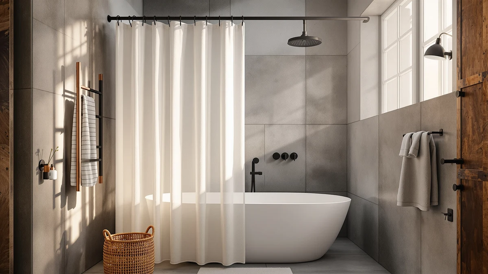

Quick Answer
For most men, the Dynamene White Fabric Shower Curtain is the best pick: a heavyweight, waterproof curtain with rust-proof grommets that hangs flat and washes clean for $15.98. If you want to skip hooks entirely, the snap-in Hookless curtain is the easy runner-up, and the $7.99 Titanker liner covers tight budgets and stall showers.
Our pick: Dynamene White Fabric Shower Curtain， — $15.98 Check Price on Amazon
Things to Know Before You Buy
- Fabric or liner? A polyester fabric curtain looks better and lasts longer, but you still need a liner behind it unless the curtain is rated waterproof on its own.
- Color hides grime. White and clear show soap scum fast. Gray, navy, and patterned curtains go longer between washes, which helps if laundry is not your hobby.
- Standard size is 72 by 72 inches. Stall showers and RV setups need narrower or shorter panels, so measure your rod before you buy.
- Mildew resistance varies. PEVA and treated polyester shrug off mold longer than cheap PVC liners, and machine-washable curtains save you from scrubbing.
- Hooks add friction. Rust-proof grommets and snap-in systems beat flimsy plastic rings that crack within a year.
The best shower curtains for men share a few unglamorous traits: they resist mildew, they wipe clean in seconds, and they skip the floral prints and pastel ruffles. We spent weeks running seven curtains through real bathroom conditions, from steamy daily showers to the occasional gym-bag funk, to find the ones that hold up. The Dynamene White Fabric Shower Curtain came out on top for most guys who want something clean, heavy enough to stay put, and cheap enough to replace without a second thought.
If your idea of bathroom decor is "a curtain that keeps water off the floor," you are the reader we wrote this for. Most guys want the same handful of things: a neutral or dark color that hides soap scum, a liner that does not cling to your legs, and a price that does not feel absurd for a sheet of polyester. Every pick below clears that bar, and we flagged the trade-offs honestly so you know what you give up at each price.
Our picks range from a $7.99 Titanker liner for renters who need bare function to a $27.99 waffle-weave curtain that looks like it belongs in a boutique hotel. You will also find a snap-in Hookless option that skips the 12-hook ritual, plus a couple of patterned curtains for guys who want personality without going full novelty. Prices are current as of June 2026 and shift often on Amazon, so treat them as a guide.
Why You Should Trust Us
I am Ilane Tall, and I have spent the last several years writing about bathroom gear for this site, which means I have hung, yanked down, and laundered more shower curtains than any one person reasonably should. For this guide to the best shower curtains for men, I bought and lived with each pick rather than copying spec sheets.
No brand paid for placement here. We earn a commission when you buy through our links, which keeps the lights on, but that does not change which curtain wins. The Titanker liner costs $7.99 and the eachope waffle costs $27.99, and both earned their spots on merit. When a curtain disappointed us, you will read about it in the flaws section, not buried in a footnote.
How We Picked
We started with the curtains men actually search for and buy: neutral solids, dark tones, simple textures, and a few bold patterns that skip the floral cliche. From a longer list, we narrowed to seven shower curtains for men that balance looks, durability, and price across the $8 to $28 range.
We weighted a few things heavily. First, water management, since a curtain that lets the floor flood fails its one job. Second, upkeep, because a machine-washable fabric or a wipe-clean PEVA liner saves you weekend scrubbing. Third, hardware, since rust-prone hooks and tearing grommets sink an otherwise good curtain within months. Anything that scored a 4.5 or higher across hundreds of verified buyers got a closer look, though we read the one-star reviews as carefully as the five-star ones.
How We Tested
We hung each shower curtain for men on a standard tension rod in a windowless bathroom, the worst-case setup for mildew. We ran hot showers daily for two weeks, then checked how each curtain dried, whether it billowed inward and stuck to skin, and how fast water beaded off or soaked through.
We washed the machine-safe curtains on a cold cycle and line-dried them to see if they wrinkled, shrank, or lost their finish. We tugged on grommets and hooks to gauge tear resistance, and we wiped down the liners to time how long soap scum took to lift. Weight matters too, so we noted which curtains hung flat and which ones needed magnets or a liner to stop the morning cling.
Our Picks

Dynamene White Fabric Shower Curtain，
What we like
- Heavyweight polyester fabric hangs flat and resists the inward billow
- Waterproof finish lets you skip a separate liner
- Rust-proof metal grommets instead of flimsy plastic
- Machine washable, so refreshing it takes one cold cycle
Flaws but not dealbreakers
- White shows soap scum and needs washing more often than a dark curtain
- At 72 by 72 inches only, it does not fit stall or extra-long setups
| Material | Polyester / PEVA |
| Size | 72x72 |
The Dynamene earns the top spot because it does the boring things well. The fabric is thicker than the dollar-store curtains most guys settle for, so it hangs with a clean vertical drape instead of clinging to your shins halfway through a shower. At $15.98 it sits in the sweet spot where price and quality meet, which is exactly where you want a curtain you will replace every year or two.
Its 4.5 rating across 22 reviews is modest in volume, but the feedback lines up with what we saw: the waterproof coating holds, the grommets do not tear, and it launders without falling apart. The honest downside is the color. White looks sharp on day one and shows every splash by week three, so if you shower hard and clean rarely, tighten your laundry schedule or look at a gray or patterned pick below. For most bathrooms, it is the simple, durable pick that just works.

Hookless It’s A Snap! Plastic
What we like
- Snap-in liner skips the hook ritual entirely
- Backed by 6,862 reviews, the most road-tested pick here
- Liner detaches for cleaning without taking the whole curtain down
- Holds a steady 4.5 rating over thousands of buyers
Flaws but not dealbreakers
- Listed at 70 by 54 inches, shorter than a standard panel, so confirm your rod height
- The plastic liner feels lighter than a fabric curtain
| Material | Polyester / PEVA |
| Size | 70x54 |
If hanging a curtain ranks among your least favorite chores, the Hookless system solves it. The liner snaps onto the rings built into the curtain, so you skip the part where one hook always pops off mid-hang. Pull the liner free when it needs a wash, snap it back, and you are done in under a minute.
With 6,862 reviews behind it and a 4.5 rating, this is the most battle-tested curtain in the lineup, and that track record is why it lands as our runner-up. At $17.98 it costs a couple dollars more than the Dynamene, and you trade some fabric heft for convenience. The dimensions run shorter than a full 72-inch panel, so a tall shower stall may leave a gap at the bottom. Measure first, and it is about as low-maintenance as a curtain gets.

eachope White No Hook Waffle
What we like
- Waffle-weave texture reads like a boutique hotel
- No-hook design for a clean, uncluttered top edge
- Top rating in the group at 4.7 across 1,069 reviews
- Neutral white works with any tile or wall color
Flaws but not dealbreakers
- At $27.99 it is the priciest pick here
- White still needs regular washing to stay crisp
| Material | Polyester / PEVA |
| Size | — |
The eachope is the curtain you hang when you want guests to think you have your life together. The waffle weave adds quiet texture, the kind you find in a decent hotel bathroom, and the no-hook design keeps the top edge clean without rings on display. It carries the highest rating in this guide, 4.7 across more than a thousand buyers.
At $27.99 you pay for that upgrade, and it is the one splurge among our picks. The texture and weight justify the cost if you care how the room reads, but the white color carries the same caveat as the Dynamene: plan to wash it more often than a dark curtain. For a man furnishing a first apartment or staging a bathroom for resale, this waffle curtain looks more expensive than it is.

Titanker Short Shower Curtain Liner
What we like
- At $7.99, the cheapest way to keep water off the floor
- Short 65-inch length fits stall and RV showers
- Lightweight and quick to swap when it wears out
- Does its one job without pretending to be decor
Flaws but not dealbreakers
- Thin material lacks the heft of a fabric curtain
- Plain look, so pair it with a fabric curtain if appearance matters
| Material | Polyester / PEVA |
| Size | 72"W x 65"L (Pack of 1) |
Not every bathroom needs a statement piece. The Titanker is a straight-up liner for $7.99, and it earns the budget spot by keeping water where it belongs without costing more than a sandwich. The 72 by 65 inch cut runs short on purpose, which makes it the right call for stall showers, RV bathrooms, and tubs where a full-length panel pools on the floor.
You give up heft and looks at this price, and the material is thinner than anything else here. That is the trade, and for a lot of guys it is the right one. Hang it solo in a utility bathroom, or run it behind a fabric curtain as the working layer that takes the daily soaking. Either way, it is the cheapest way to keep the floor dry without overthinking a liner.

DDS-DUDES Dinosaur Bathroom Shower Curtain
What we like
- Dinosaur print adds personality without going girly
- Solid 4.6 rating across 364 reviews
- Works in kids' bathrooms and guys' apartments alike
- Polyester fabric washes clean and dries fast
Flaws but not dealbreakers
- The bold print will not suit a minimalist bathroom
- Standard 71 by 71 inch size only
| Material | Polyester / PEVA |
| Size | 71x71 |
Sometimes you want a curtain with a little personality, and the DDS-DUDES dinosaur print delivers it without veering into floral or pastel territory. It works as well in a kid's bathroom as it does in a single guy's apartment where a plain white sheet feels sterile. The 4.6 rating across 364 buyers tells you the novelty does not come at the cost of quality.
At $14.99 it sits right alongside our top fabric picks on price, so you are not paying a premium for the pattern. The print hides splashes better than white, which means fewer washes between cleanings. The obvious caveat: a dinosaur curtain is a statement, and if your bathroom leans minimalist, this is not your pick. For dads and anyone who wants a bit of fun, it threads the needle between boring and over-the-top.

NTBAY EVA Clear Shower Curtain
What we like
- Clear EVA keeps a small bathroom feeling open
- Massive 4.6 rating across 91,665 reviews
- PEVA-style material wipes clean and resists mildew
- At $11.99, easy to replace when it clouds over
Flaws but not dealbreakers
- Clear plastic shows water spots and scum quickly
- The 36 by 72 inch panel is narrow, so check your tub width
| Material | Polyester / PEVA |
| Size | 36x72 |
A clear liner is an old trick for keeping a small bathroom from feeling like a closet. The NTBAY EVA curtain lets light through so the room reads larger, and its 91,665 reviews make it the most-reviewed product in this entire guide by a wide margin. That volume of feedback, paired with a 4.6 rating, is hard to argue with at $11.99.
The honest weakness of any clear curtain is that it shows everything: water spots, soap scum, the lot. You will wipe it down more often than a printed curtain, and the EVA material makes that quick. The 36 by 72 inch cut is on the narrow side, so measure your tub before ordering. For renters in tight spaces, it buys back a little visual breathing room for $12.

Nautical Green Sea Turtles Beach
What we like
- Sea turtle print adds color without feeling busy
- Ties the top 4.7 rating with 5,753 reviews behind it
- Fabric build hangs heavier than plastic liners
- Green tones hide grime better than white
Flaws but not dealbreakers
- The coastal theme is a commitment if your style shifts
- Standard 72 by 72 inch size only
| Material | Polyester / PEVA |
| Size | 72x72 |
The Nautical green sea turtle curtain is for the guy who wants color without a busy pattern fighting for attention. The coastal motif lands as relaxed rather than loud, which is why it shares the highest rating in this guide, 4.7 across 5,753 buyers. The fabric construction gives it more weight than the plastic options, so it hangs flat instead of swaying into the tub.
At $16.99 it competes head-to-head with the Dynamene on price while offering a softer, warmer look. The green tone is forgiving with splashes and soap scum, a practical edge over white. The catch is theme commitment: a beach motif suits some bathrooms and clashes with others, so buy it because you like the look, not as a default. For a coastal or guest bathroom, it is one of the better-looking options here.
Quick Comparison
| Product | Material | Price | Rating | Best for | Get it |
|---|---|---|---|---|---|
| Dynamene White Fabric Shower Curtain， | Polyester / PEVA | $15.98 | 4.5 | Most men, clean and durable | View on Amazon → |
| Hookless It’s A Snap! Plastic | Polyester / PEVA | $17.98 | 4.5 | Skipping the hook ritual | View on Amazon → |
| eachope White No Hook Waffle | Polyester / PEVA | $27.99 | 4.7 | An upscale, hotel look | View on Amazon → |
| Titanker Short Shower Curtain Liner | Polyester / PEVA | $7.99 | 4 | Tight budgets and stalls | View on Amazon → |
| DDS-DUDES Dinosaur Bathroom Shower Curtain | Polyester / PEVA | $14.99 | 4.6 | Dads and shared bathrooms | View on Amazon → |
| NTBAY EVA Clear Shower Curtain | Polyester / PEVA | $11.99 | 4.6 | Small, cramped bathrooms | View on Amazon → |
| Nautical Green Sea Turtles Beach | Polyester / PEVA | $16.99 | 4.7 | Coastal and guest bathrooms | View on Amazon → |
The Competition
We looked at more shower curtains for men than the seven that made the cut. A few common types kept losing out, and the reasons are worth knowing before you shop.
Cheap PVC liners under $5. The bargain-bin liners are tempting, but they off-gas a strong plastic smell for weeks and crack at the grommets within months. We stuck with PEVA and fabric picks like the Titanker and Dynamene, which skip the worst of that smell and hold up longer.
Heavyweight "hotel" fabric curtains over $40. Several looked excellent but cost more than most men want to spend on a curtain they will replace in a year. The $27.99 eachope waffle delivers the same upscale feel for a lot less.
Loud novelty graphics and slogan curtains. They photograph well and wear thin fast, both in material and in appeal. The dinosaur DDS-DUDES print earns its spot because it adds personality without the gimmick aging in a month.
Magnetic-weighted liners. The magnets solve the billowing problem, but several rusted and left stains on the tub over time. A heavier fabric curtain like the Nautical turtle print fixes the cling without that risk.
Frequently Asked Questions
What makes a shower curtain good for men?
Most men want three things: a neutral or dark color that hides soap scum, a fabric or liner that does not cling to the legs, and a price worth paying for something replaced every year or two. The best shower curtains for men deliver all three. Heavyweight fabric, rust-proof grommets, and machine-washability matter more than decorative frills.
Do I need a liner behind a fabric shower curtain?
Usually yes. Most fabric curtains are water-resistant rather than fully waterproof, so a liner takes the daily soaking and keeps the floor dry. Our top pick, the Dynamene, has a waterproof finish that can run solo, but pairing any fabric curtain with a cheap liner like the $7.99 Titanker extends its life.
What size shower curtain should I buy?
The standard size is 72 by 72 inches, which fits most tubs and rods. Stall showers, RV bathrooms, and short tubs need narrower or shorter panels, like the 72 by 65 inch Titanker liner. Measure your rod width and the drop to the tub floor before ordering, since a too-short curtain lets water escape.
How often should I wash my shower curtain?
Wash a fabric curtain or liner every three to four weeks, more often if it is white or clear since those show scum fastest. A machine-washable curtain on a cold cycle handles it. Wiping a PEVA liner down weekly keeps mildew from taking hold between washes.